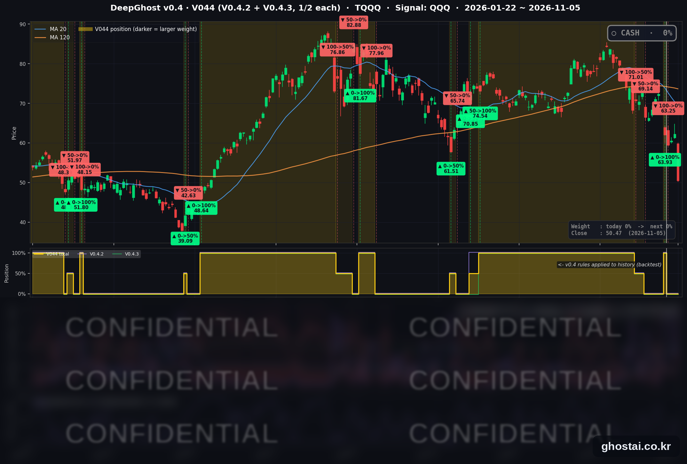

AI 관련주 매도에 나스닥 5.5% 하락, 조정 구간 진입
· Ghost.AI 데일리 리포트
👻 매일 시그널과 히스토리를 홈페이지에서 한눈에 → www.ghostai.co.kr
회원 페이지 안내 — 회원 가입하시면 공식 전략 v0.4의 TQQQ 비중과 판단 근거, 원본 차트, 분석 레포트를 매일 확인하실 수 있습니다. 회원 페이지는 블로그·유튜브보다 먼저 업데이트됩니다. 지금 베타 회원을 받고 있으며, 이메일과 필명만으로 가입하실 수 있고 서비스 사용료는 받지 않습니다. 이메일 확인 후 바로 이용하실 수 있습니다.
AI 관련주 중심의 매도로 나스닥이 5.52% 내려 10월 6일 최고 종가보다 11.90% 낮은 조정 구간에 들어갔고, S&P 500·다우도 2025년 4월 이후 하루 하락률이 가장 컸습니다. 원인은 하나로 확인되지 않았습니다. 전략은 11월 2일 시가 63.25달러에 TQQQ 를 매도한 뒤 현금 보유 중이고, TQQQ 는 18.92% 내린 50.47달러로 마감했습니다.
📊 오늘의 매매 신호
| 항목 | 내용 |
|---|---|
| 오늘의 신호 | 🟡 신규 신호 없음 — 전략은 현금 보유를 유지합니다 |
| 포지션 상태 | 💵 현금 보유 중 (OUT OF POSITION) |
| 현금 보유 기간 | 2026-11-02 ~ 2026-11-05 (4일, 11월 2일 시가 매도 후) |
| TQQQ 종가 | $50.47(-18.92%) |
TQQQ 시그널 — OUT OF POSITION
현재 상태: 현금 보유 중 | 11월 2일 시가 $63.25 매도

차트의 색 띠와 아래 패널은 전략의 TQQQ 비중입니다. 11월 2일 이전의 비중 표시는 v0.4 규칙을 과거 데이터에 적용한 백테스트이며, 그 기간 실제 운용은 v0.3 이었습니다.
전략은 11월 2일(월) 시가 63.25달러에 TQQQ 를 매도한 뒤 현금 보유 중이고, 11월 5일에도 새 신호는 나오지 않았습니다. TQQQ 는 18.92% 내린 50.47달러로 마감해 하루 하락률이 2020년 3월 이후 가장 컸고, 종가는 4월 10일 이후 가장 낮습니다. 이 종가는 매도가보다 20.21%, 6월 2일 최고 종가(87.22달러)보다 42.14% 낮습니다.
매도는 11월 2일에 이미 끝난 일이고, 11월 5일 하락은 그 뒤에 일어났습니다. 매도 신호는 10월 30일에 나와 11월 3일 선거와 11월 4일 장 마감 뒤 실적 발표보다 앞섭니다. 이 매도를 이날 거론된 하락 원인과 연결할 근거는 없고, 이번 매도로 끝난 매매의 전략 수익률도 -1.06% 였습니다. 현금 상태에서는 TQQQ 가 내려도 전략 자산이 늘지 않으며, 매도가와의 차이는 전략이 다시 사는 가격에 따라 달라지므로 아직 확정된 것이 아닙니다.
오늘 미국 시장 — 시황 요약
지수 마감
| 지수 | 종가 | 등락률 |
|---|---|---|
| S&P 500 | 7,353.73 | -4.36% |
| 나스닥 종합 | 24,315.00 | -5.52% |
| 다우존스 | 51,523.06 | -3.44% |
| 러셀 2000 (IWM) | 270.98 | -4.59% |
| QQQ (나스닥100, 잠정치) | 647.05 | 6%대 중반 하락 |
| TQQQ | 50.47 | -18.92% |
| 반도체 ETF (SOXX, 3대1 액면분할 조정) | 131.90 | -12.15% |
나스닥·S&P 500·다우의 하루 하락률은 모두 2025년 4월 이후 가장 컸고, QQQ 와 SOXX 는 2020년 3월 이후 가장 컸습니다. QQQ 는 종가가 장 마감 직후 수집한 잠정치라 작게 정정될 수 있어 6%대 중반으로 적었습니다.
S&P 500 구성종목 493개 중 74개가 올랐고 419개가 내렸습니다. 등락률 중간값은 -2.20% 로 지수 하락률보다 작아, 시가총액이 큰 AI 관련주가 지수 하락 폭을 키웠습니다. 하락은 시가 이후에 주로 나왔습니다. SPY 는 시가 -0.17% 에서 -4.41%, DIA 는 시가 +0.53% 에서 -3.53% 로 마감했고, 주요 ETF 모두 저가 근처에서 끝났습니다.
나스닥은 10월 6일 최고 종가보다 11.90%, S&P 500 은 5.95%, QQQ 는 약 15% 낮습니다. 나스닥과 QQQ 는 4월 7일 이후 처음 200일선 아래로 마감했고(나스닥 3.10% 아래, QQQ 약 5% 아래), S&P 500 은 200일선보다 0.42% 위에 있습니다.
국채 금리 동향
| 만기 | 11/4 종가 | 11/5 종가 | 전일 대비 |
|---|---|---|---|
| 5년 | 4.689% | 4.608% | -8.1bp |
| 10년 | 4.894% | 4.837% | -5.7bp |
| 30년 | 5.282% | 5.251% | -3.1bp |
만기가 짧을수록 많이 내렸습니다. 10년물 4.837% 는 9월 9일과 같은 값으로 그 뒤로 가장 낮습니다. 미 재무부 기준 2년물은 4.46% 로 12bp 내렸고, 10년물과 3개월물의 차이는 69bp 에서 67bp 로 줄었으며 역전은 없습니다.
금리가 내렸지만 주가 하락을 막지 못했습니다. 금리에 민감한 주택건설주(세부 업종 중간값 -0.10%)와 부동산(-0.85%)은 시장보다 적게 내렸습니다.
연준 발언 & 금리 패스
- 해맥 클리블랜드 연은 총재: "물가를 제때 2% 로 되돌리려면 통화정책이 긴축적인 수준으로 가야 한다"고 말했습니다(로이터). 매파적입니다.
- 바킨 리치먼드 연은 총재: 물가를 "지금 연준의 가장 중요한 위험"이라고 했고, 점진적 인상이 "타당하다"고 말했습니다(FXStreet). 매파적입니다.
- 금리 경로: 연준 기준금리는 3.75~4.00% 이고 다음 회의는 12월 8~9일입니다. 두 총재가 인상을 지지했는데도 CME FedWatch 기준 12월 0.25%p 인상 확률은 82.7% 에서 70.1% 로 내렸습니다(CNBC). 두 발언을 이날 하락 원인으로 지목한 보도는 찾지 못했습니다.
오늘의 핵심 이슈
- AI 관련주 중심 매도로 나스닥이 5.52% 내렸고, 원인은 하나로 확인되지 않았습니다. AP·로이터·CNBC 는 AI 데이터센터 투자 둔화 우려와, 민주당의 상·하원 승리 및 주민투표 결과로 데이터센터 규제가 강해질 수 있다는 우려를 꼽았습니다. 로이터는 퀄컴·Arm 의 약한 실적을 지목한 전략가 발언도 전했습니다. 노무라의 찰리 맥엘리곳은 기초 여건의 악화가 아니라 헤지펀드가 연말 전에 올해 수익을 확정하려는 매도가 주된 이유라고 봤습니다.
- 11개 업종 중간값이 모두 내렸습니다. S&P 500 과 다우는 선거 다음 날인 전일 상승 폭보다 더 내렸습니다. 업종 중간값은 정보기술이 -7.62% 로 가장 낮고 유틸리티가 -0.24% 로 가장 높습니다. 세부 업종에서는 반도체 장비 -13.58%, 전자부품 -12.92%, 하드웨어·저장장치 -11.84%, 반도체 -10.38% 로 AI 인프라 관련 업종이 크게 내렸습니다. 올해 수익률 상위 20% 종목의 중간값은 -3.91%, 하위 20% 는 -1.28% 입니다.
- 이날 나온 경제지표는 나쁘지 않았습니다. 주간 신규 실업수당 청구는 18.9만 건으로 전주(19.5만 건)보다 줄었고, 3분기 생산성은 3.6% 올랐습니다. 이날 경제지표 악화를 하락 원인으로 지목한 보도는 찾지 못했습니다. 다음 거래일에는 10월 고용보고서가 나옵니다.
변동성 & 투자심리
VIX 는 16.61 에서 28.18 로 69.66% 올라 3월 30일 이후 가장 높은 종가로 마감했고, 하루 상승률은 2024년 12월 이후 가장 큽니다. 공포탐욕 지수는 집계 사이트(feargreedmeter.com) 표시값이 20(극단적 공포)으로 전일 27보다 낮습니다. 이 사이트는 날짜를 표시하지 않고 CNN 원자료는 확인하지 못해 참고값입니다.
매크로 & 원자재
| 품목 | 종가 | 등락률 |
|---|---|---|
| 원유 ETF (USO) | $148.21 | +1.93% |
| 금 ETF (GLD) | $375.49 | +0.81% |
- 원유: 트럼프 대통령이 이란 전쟁 종료 협상에 나설지 불확실해 유가가 올랐다고 야후 파이낸스가 전했습니다. USO 는 전일 8.07% 내렸습니다.
- 영란은행: 기준금리를 0.25%p 올려 4% 로 결정했습니다. 표결은 8대 1입니다.
주요 종목 동향
| 종목 | 종가 | 등락률 | 비고 |
|---|---|---|---|
| MU | 656.39 | -17.46% | 메모리 약세 |
| TSLA | 343.69 | -10.77% | |
| AVGO | 291.53 | -10.43% | AI 인프라 약세 |
| INTC | 52.25 | -10.33% | |
| QCOM | 156.75 | -9.49% | 실적 발표 뒤 시가 -13.35% 에서 하락 폭 축소 |
| NVDA | 181.60 | -9.26% | AI 인프라 약세 |
| META | 605.08 | -3.96% | 장중 -7.33% |
| MSFT | 535.93 | -3.58% | 전일 사상 최고 종가 |
| GOOGL | 282.57 | -2.20% | |
| AMZN | 260.21 | -2.19% | |
| AAPL | 344.17 | -1.53% | 전일 사상 최고 종가 |
| NFLX | 65.56 | -1.25% |
커버리지 12종목이 모두 내렸습니다. 반도체는 9~17%, 대형 플랫폼 기업은 1~4% 내렸습니다.
다음 일정 (미 동부시간)
- 11/6(금) 08:30 10월 고용보고서 (비농업 고용 예상 +5.9만 명, 실업률 예상 4.2%, 다우존스 기준) / 10:00 11월 미시간대 소비자심리 잠정치 / 12:15 보먼 연준 감독 부의장 대담
- 11/9~11/12 3년물(11/9)·10년물(11/10)·30년물(11/12) 국채 입찰, 각 13:00
- 11/10(화) 08:30 10월 CPI
- 11/13(금) 08:30 10월 PPI
- 11/18(수) 14:00 10월 FOMC 의사록
- 12/8~12/9 FOMC
Ghost.AI — Quantitative AI Investment
Model: DeepGhost v0.4 | Transformer-Based Deep Learning
Coverage: 14 tickers | Updated every trading day after US market close
⚠️ 본 자료는 정보 제공 목적으로만 작성되었으며 투자 권유가 아닙니다. 모든 투자의 책임은 투자자 본인에게 있습니다. 과거 성과가 미래 수익을 보장하지 않습니다.
[유의사항]
- 본 서비스는 불특정 다수를 대상으로 발행되는 단방향 정보 제공 서비스이며, 투자자 개인의 재산 상황·투자 목적·위험 선호도를 반영한 개별 투자 조언이 아닙니다.
- 고스트에이아이 주식회사는 고객과 쌍방향 의사소통(개별 상담, 맞춤형 자문 등)을 제공하지 않습니다.
- 본 콘텐츠는 투자 권유 또는 매매 주문의 청약·청약의 권유에 해당하지 않으며, 최종 투자 판단 및 그에 따른 손익의 책임은 전적으로 투자자 본인에게 있습니다.
고스트에이아이 주식회사